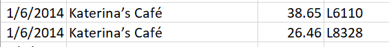

Welcome to Ong Chee Hong’s Vast Challenge 2021 Assignment
packages = c('DT','ggiraph','plotly','tidyverse', 'raster','sf','clock','tmap',
'rgdal','dplyr', 'tidyr', 'textclean', "plotly", "forcats", "jpeg", "tiff",
"mapview","tidygraph","igraph","ggraph","visNetwork","leaflet","lubridate")
for(p in packages){
if(!require(p,character.only = T)){
install.packages(p)
}
library(p,character.only = T)
}
car <- read_csv("data/mc2/car-assignments.csv")
cc <- read_csv("data/mc2/cc_data.csv", locale = locale(encoding = "ASCII"))
gps <- read_csv("data/mc2/gps.csv")
loyalty <- read_csv("data/mc2/loyalty_data.csv",locale = locale(encoding = "ASCII"))
First, we will customize the all code chunks using the below knitr code. More information on chunk options can be found here
Next, we will install the required R packages. There are three basic groups of packages that we will install,
For data manipulation and preparation The tidyverse package is a group of R packages including dplyr, tidyr that assist user to manipulate data.
Date and Time The two packages clock and lubridate are used for the manipulation of date and time data
Interactive data analysis The two packages ggiraph and plotly are used to output data into interactive graphical/chart form for analysis.
GeoVisual Analysis The packages raster, sf,tmap and rgdal are used for geospatial visual analytics where data are output to a map for analysis such as movement of people etc.
Network Analysis Lastly, to analyse the relationship between people etc. We will use the packages from tidygraph, igraph, ggraph and visNetwork. visNetwork is a package to output interactive network analysis.
packages = c('DT','ggiraph','plotly','tidyverse', 'raster','sf','clock','tmap',
'rgdal','dplyr', 'tidyr', 'textclean', "plotly", "forcats", "jpeg", "tiff",
"mapview","tidygraph","igraph","ggraph","visNetwork","leaflet","lubridate")
for(p in packages){
if(!require(p,character.only = T)){
install.packages(p)
}
library(p,character.only = T)
}
There are 3 different types of data & information provided. A geospatial dataset, csv files and a jpg file consisting of the Abila tourist map.
Below is the information of all the data provided.
Employee Last Name
Employee First Name
Car ID (integer)
Current Employment Type (Department; categorical)
Current Employment Title (job title; categorical)
3.1 Timestamp
3.2 Car ID (integer)
3.3 Latitude
3.4 Longitude
4.1 Timestamp
4.2 Location (name of the business)
4.3 Price (real)
4.4 Loyalty Number (A 5-character code starting with L that is unique for each card)
5.1 Timestamp
5.2 Location (name of the business)
5.3 Price (real)
5.4 Last 4 digits of the credit or debit card number
We will import the 4 different csv datasets that were provided
car <- read_csv("data/mc2/car-assignments.csv")
cc <- read_csv("data/mc2/cc_data.csv")
gps <- read_csv("data/mc2/gps.csv")
loyalty <- read_csv("data/mc2/loyalty_data.csv")
If we take a look at the above datasets in excel, we will see that there are foreign characters in some of the datasets provided. An example is the Katerina’s Cafe as shown below. To address this, we will need to encode the dataset to allow rstudio to read properly.

To allow use to know the encoding type for both cc and loyalty dataset. Guess encoding will be used to detect the encoding type as shown below..
guess_encoding(cc)
# A tibble: 1 x 2
encoding confidence
<chr> <dbl>
1 ASCII 1guess_encoding(loyalty)
# A tibble: 1 x 2
encoding confidence
<chr> <dbl>
1 ASCII 1Next, we will add the code locale = locale(encoding = “ASCII” on both cc and loyalty dataset)
car <- read_csv("data/mc2/car-assignments.csv")
cc <- read_csv("data/mc2/cc_data.csv", locale = locale(encoding = "ASCII"))
gps <- read_csv("data/mc2/gps.csv")
loyalty <- read_csv("data/mc2/loyalty_data.csv",locale = locale(encoding = "ASCII"))
First, we will look at both cc and loyalty card dataset by using the glimpse function as shown below. There are 1490 rows and 1392 rows in both the cc and loyatly dataset respectfully. If we take look closely, we will see that these two datasets are closely linked by location, price and timestamp except the last4ccnum and loyaltynum are different.
If we take a look back at the MC2 background, we will observe that Kronos based companies are allowed to collect credit card and loyalty cards information on GAStech employees purchases as such these two datasets are similar in nature.
However, the rows for both cc and loyalty card data are different. This anomaly might have a few reasoning, 1) the employees did not used their credit cards while doing purchases but loyalty card was presented. 2) Vice versa, employees might also used their credit card but did not present their loyalty card during purchases.
glimpse(cc)
Rows: 1,490
Columns: 4
$ timestamp <chr> "1/6/2014 7:28", "1/6/2014 7:34", "1/6/2014 7:35"~
$ location <chr> "Brew've Been Served", "Hallowed Grounds", "Brew'~
$ price <dbl> 11.34, 52.22, 8.33, 16.72, 4.24, 4.17, 28.73, 9.6~
$ last4ccnum <dbl> 4795, 7108, 6816, 9617, 7384, 5368, 7253, 4948, 9~glimpse(loyalty)
Rows: 1,392
Columns: 4
$ timestamp <chr> "1/6/2014", "1/6/2014", "1/6/2014", "1/6/2014", "~
$ location <chr> "Brew've Been Served", "Brew've Been Served", "Ha~
$ price <dbl> 4.17, 9.60, 16.53, 11.51, 12.93, 4.27, 11.20, 15.~
$ loyaltynum <chr> "L2247", "L9406", "L8328", "L6417", "L1107", "L40~Next, we will look at the vehicle datasets. The 44 rows car datasets are represented by the employee, employment information with their car assignment ID.
The gps datasets are based on the car movements in respect to their lat and long position with timestamp.
glimpse(car)
Rows: 44
Columns: 5
$ LastName <chr> "Calixto", "Azada", "Balas", "Barranc~
$ FirstName <chr> "Nils", "Lars", "Felix", "Ingrid", "I~
$ CarID <dbl> 1, 2, 3, 4, 5, 6, 7, 8, 9, 10, 11, 12~
$ CurrentEmploymentType <chr> "Information Technology", "Engineerin~
$ CurrentEmploymentTitle <chr> "IT Helpdesk", "Engineer", "Engineer"~glimpse(gps)
Rows: 685,169
Columns: 4
$ Timestamp <chr> "1/6/2014 6:28", "1/6/2014 6:28", "1/6/2014 6:28",~
$ id <dbl> 35, 35, 35, 35, 35, 35, 35, 35, 35, 35, 35, 35, 35~
$ lat <dbl> 36.07623, 36.07622, 36.07621, 36.07622, 36.07621, ~
$ long <dbl> 24.87469, 24.87460, 24.87444, 24.87425, 24.87417, ~We will prepare the cc and loyalty datasets for data exploration later.
The last4ccnum of the cc datasets and the loyaltynum of the loyalty dataset should be a categorical data type. As such, we will change it by using the as.factor function.
Next, we will modify the datatype for both the timestamp of cc and loyalty dataset using the clock package. If we observe below, the data_time_parse function is use to change the timestamp to dttm (datetime) format while the date_parse function is used to change the data to date format.
cc$timestamp <- date_time_parse(cc$timestamp,
zone = "",
format = "%m/%d/%Y %H:%M")
loyalty$timestamp <- date_parse(loyalty$timestamp,
format = "%m/%d/%Y")
We will double check the dataset to confirm that the datatype has been changed to the one we wanted.
glimpse(cc)
Rows: 1,490
Columns: 4
$ timestamp <dttm> 2014-01-06 07:28:00, 2014-01-06 07:34:00, 2014-0~
$ location <chr> "Brew've Been Served", "Hallowed Grounds", "Brew'~
$ price <dbl> 11.34, 52.22, 8.33, 16.72, 4.24, 4.17, 28.73, 9.6~
$ last4ccnum <fct> 4795, 7108, 6816, 9617, 7384, 5368, 7253, 4948, 9~glimpse(loyalty)
Rows: 1,392
Columns: 4
$ timestamp <date> 2014-01-06, 2014-01-06, 2014-01-06, 2014-01-06, ~
$ location <chr> "Brew've Been Served", "Brew've Been Served", "Ha~
$ price <dbl> 4.17, 9.60, 16.53, 11.51, 12.93, 4.27, 11.20, 15.~
$ loyaltynum <fct> L2247, L9406, L8328, L6417, L1107, L4034, L6110, ~To allow us to dive deeper into our analysis later, we will split the timestamp dataset into date, time and day columns. We will first add more columns by using the mutate function from dplyr to add day, date and time columns in the cc dataset and importing in to the cc_dtsplit object.
There is no need to add columns for the loyatly dataset as we will join both the datasets together in which day will be included in the joined dataset.
cc_dtsplit <- cc %>%
mutate(day = date_weekday_factor(cc$timestamp), date = as_date(cc$timestamp), time = format(cc$timestamp, format = "%H:%M"))
cc_dtsplit
# A tibble: 1,490 x 7
timestamp location price last4ccnum day date
<dttm> <chr> <dbl> <fct> <ord> <date>
1 2014-01-06 07:28:00 Brew've Been~ 11.3 4795 Mon 2014-01-06
2 2014-01-06 07:34:00 Hallowed Gro~ 52.2 7108 Mon 2014-01-06
3 2014-01-06 07:35:00 Brew've Been~ 8.33 6816 Mon 2014-01-06
4 2014-01-06 07:36:00 Hallowed Gro~ 16.7 9617 Mon 2014-01-06
5 2014-01-06 07:37:00 Brew've Been~ 4.24 7384 Mon 2014-01-06
6 2014-01-06 07:38:00 Brew've Been~ 4.17 5368 Mon 2014-01-06
7 2014-01-06 07:42:00 Coffee Camel~ 28.7 7253 Mon 2014-01-06
8 2014-01-06 07:43:00 Brew've Been~ 9.6 4948 Mon 2014-01-06
9 2014-01-06 07:43:00 Brew've Been~ 16.9 9683 Mon 2014-01-06
10 2014-01-06 07:47:00 Hallowed Gro~ 16.5 8129 Mon 2014-01-06
# ... with 1,480 more rows, and 1 more variable: time <chr>To allow us to join both datasets together, we will need to rename the timestamp column from the loyatly dataset to date so that both the date columns have the same name.
loyalty_dt <- rename(loyalty, date = timestamp)
We will take a look at our newly cleaned datasets to double check the changed we have made previously.
glimpse(cc_dtsplit)
Rows: 1,490
Columns: 7
$ timestamp <dttm> 2014-01-06 07:28:00, 2014-01-06 07:34:00, 2014-0~
$ location <chr> "Brew've Been Served", "Hallowed Grounds", "Brew'~
$ price <dbl> 11.34, 52.22, 8.33, 16.72, 4.24, 4.17, 28.73, 9.6~
$ last4ccnum <fct> 4795, 7108, 6816, 9617, 7384, 5368, 7253, 4948, 9~
$ day <ord> Mon, Mon, Mon, Mon, Mon, Mon, Mon, Mon, Mon, Mon,~
$ date <date> 2014-01-06, 2014-01-06, 2014-01-06, 2014-01-06, ~
$ time <chr> "07:28", "07:34", "07:35", "07:36", "07:37", "07:~glimpse(loyalty_dt)
Rows: 1,392
Columns: 4
$ date <date> 2014-01-06, 2014-01-06, 2014-01-06, 2014-01-06, ~
$ location <chr> "Brew've Been Served", "Brew've Been Served", "Ha~
$ price <dbl> 4.17, 9.60, 16.53, 11.51, 12.93, 4.27, 11.20, 15.~
$ loyaltynum <fct> L2247, L9406, L8328, L6417, L1107, L4034, L6110, ~First, we will take a look at the car & gps datasets. Notice that the CarID and id for both datasets are not of the correct categorical datatype. We will proceed to change both the two columns.
glimpse(car)
Rows: 44
Columns: 5
$ LastName <chr> "Calixto", "Azada", "Balas", "Barranc~
$ FirstName <chr> "Nils", "Lars", "Felix", "Ingrid", "I~
$ CarID <dbl> 1, 2, 3, 4, 5, 6, 7, 8, 9, 10, 11, 12~
$ CurrentEmploymentType <chr> "Information Technology", "Engineerin~
$ CurrentEmploymentTitle <chr> "IT Helpdesk", "Engineer", "Engineer"~glimpse(gps)
Rows: 685,169
Columns: 4
$ Timestamp <chr> "1/6/2014 6:28", "1/6/2014 6:28", "1/6/2014 6:28",~
$ id <dbl> 35, 35, 35, 35, 35, 35, 35, 35, 35, 35, 35, 35, 35~
$ lat <dbl> 36.07623, 36.07622, 36.07621, 36.07622, 36.07621, ~
$ long <dbl> 24.87469, 24.87460, 24.87444, 24.87425, 24.87417, ~Changing of CarID and ID to categorical data.
Next, we will combine both first and last name of the car datasets into one column for us to analyse the person easily. We will use the tidyr function unite to unify both the first and last name into name.
car_unite <- car %>%
unite(col = "name", LastName,FirstName, sep = ", ", remove =FALSE)
Next, we will rename the id of gps to CarID to match with the car_unite data. Additionally, the Timestamp data of gps will be changed to the dttm format
gps_cleaned <- rename(gps,CarID = id)
gps_cleaned$Timestamp <- date_time_parse(gps_cleaned$Timestamp,
zone = "",
format = "%m/%d/%Y %H:%M")
Lastly, we will look at our cleaned dataset and we have done cleaning the data.
glimpse(car_unite)
Rows: 44
Columns: 6
$ name <chr> "Calixto, Nils", "Azada, Lars", "Bala~
$ LastName <chr> "Calixto", "Azada", "Balas", "Barranc~
$ FirstName <chr> "Nils", "Lars", "Felix", "Ingrid", "I~
$ CarID <fct> 1, 2, 3, 4, 5, 6, 7, 8, 9, 10, 11, 12~
$ CurrentEmploymentType <chr> "Information Technology", "Engineerin~
$ CurrentEmploymentTitle <chr> "IT Helpdesk", "Engineer", "Engineer"~glimpse(gps_cleaned)
Rows: 685,169
Columns: 4
$ Timestamp <dttm> 2014-01-06 06:28:00, 2014-01-06 06:28:00, 2014-01~
$ CarID <fct> 35, 35, 35, 35, 35, 35, 35, 35, 35, 35, 35, 35, 35~
$ lat <dbl> 36.07623, 36.07622, 36.07621, 36.07622, 36.07621, ~
$ long <dbl> 24.87469, 24.87460, 24.87444, 24.87425, 24.87417, ~As shown previosuly in our data preparation segment, there is a difference in rows (difference of 98 rows) between the cc and loyalty card data. This shows an anomaly that one of the cards were used but not both during purchases which might results in a difference in number of entries.
glimpse(cc_dtsplit)
Rows: 1,490
Columns: 7
$ timestamp <dttm> 2014-01-06 07:28:00, 2014-01-06 07:34:00, 2014-0~
$ location <chr> "Brew've Been Served", "Hallowed Grounds", "Brew'~
$ price <dbl> 11.34, 52.22, 8.33, 16.72, 4.24, 4.17, 28.73, 9.6~
$ last4ccnum <fct> 4795, 7108, 6816, 9617, 7384, 5368, 7253, 4948, 9~
$ day <ord> Mon, Mon, Mon, Mon, Mon, Mon, Mon, Mon, Mon, Mon,~
$ date <date> 2014-01-06, 2014-01-06, 2014-01-06, 2014-01-06, ~
$ time <chr> "07:28", "07:34", "07:35", "07:36", "07:37", "07:~glimpse(loyalty_dt)
Rows: 1,392
Columns: 4
$ date <date> 2014-01-06, 2014-01-06, 2014-01-06, 2014-01-06, ~
$ location <chr> "Brew've Been Served", "Brew've Been Served", "Ha~
$ price <dbl> 4.17, 9.60, 16.53, 11.51, 12.93, 4.27, 11.20, 15.~
$ loyaltynum <fct> L2247, L9406, L8328, L6417, L1107, L4034, L6110, ~As explained previously, the cc and loyalty dataset are similar in nature with just an exception of the last4ccnum and loyaltynum, therefore, a join is required to match rows where the users uses both cc and loyalty card data. However, before a join is performed, we will analyse both the cc and loyalty dataset based on location counts.
A first exploratory data analysis by using a bar chart is performed on the cc_dtsplit dataset to find out the location which were patronize the most.
Based on the bar chart below, we are able to observe that there are 4 locations that are siginificantly higher in visitors than the rest of the locations. The highest is Katerina’s cafe with a total of 212 visits followed by Hippokampos, Guys’Gyros and Brew’s been served. These four places excluding Hippokampos which is not determinable in the map provided are all restaurants/bars.
cc_dtsplit_bar <- cc_dtsplit %>%
count(location) %>%
mutate(location = fct_reorder(location, n, .desc =TRUE)) %>%
plot_ly(x = ~location, y = ~n, marker = list(color = ~n)) %>%
add_bars() %>%
layout(title = "Total number of visitation by location", xaxis = list(title = ""),yaxis = list(title = "Number of visitors"))
cc_dtsplit_bar
Next, we will take a look at the loyalty_dt dataset.
Based on the bar chart below, we are able to observe that the 4 locations that were visited mostly are the same four locations that was shown on the cc_dtsplit dataset.
One difference is that Ouzeri Elian jumps to the fifth spot which differs from the cc_dtsplit dataset where Ouzeri Elian is in the sixth spot.
loyalty_dt_bar <- loyalty_dt %>%
count(location) %>%
mutate(location = fct_reorder(location, n, .desc =TRUE)) %>%
plot_ly(x = ~location, y = ~n, marker = list(color = ~n)) %>%
add_bars() %>%
layout(title = "Total number of visitation by ", xaxis = list(title = ""),yaxis = list(title = "Number of visitors"))
loyalty_dt_bar
Next, an inner join will be conducted by joining date, location and price and will will output into a new object cc_loyalty_join.
Notice that there are only 1,087 rows wheareas both cc_dtsplit and loyalty_dt has 1490 and 1392 rows respectfully. These shows that some of the data in cc does not match the loyalty data which strengthens the initial anomaly that some of the employees uses one of each card but not both during purchases.
cc_loyalty_join <- cc_dtsplit %>%
inner_join(loyalty_dt, by = c("date","location", "price"))
cc_loyalty_join
# A tibble: 1,087 x 8
timestamp location price last4ccnum day date
<dttm> <chr> <dbl> <fct> <ord> <date>
1 2014-01-06 07:28:00 Brew've Been~ 11.3 4795 Mon 2014-01-06
2 2014-01-06 07:35:00 Brew've Been~ 8.33 6816 Mon 2014-01-06
3 2014-01-06 07:36:00 Hallowed Gro~ 16.7 9617 Mon 2014-01-06
4 2014-01-06 07:37:00 Brew've Been~ 4.24 7384 Mon 2014-01-06
5 2014-01-06 07:38:00 Brew've Been~ 4.17 5368 Mon 2014-01-06
6 2014-01-06 07:43:00 Brew've Been~ 9.6 4948 Mon 2014-01-06
7 2014-01-06 07:43:00 Brew've Been~ 16.9 9683 Mon 2014-01-06
8 2014-01-06 07:47:00 Hallowed Gro~ 16.5 8129 Mon 2014-01-06
9 2014-01-06 07:48:00 Hallowed Gro~ 10.7 3492 Mon 2014-01-06
10 2014-01-06 07:49:00 Coffee Camel~ 8.39 5921 Mon 2014-01-06
# ... with 1,077 more rows, and 2 more variables: time <chr>,
# loyaltynum <fct>After joining the dataset, we found that there are 1087 rows of data available. This means that some of the credit card purchases are not linked to any of the loyalty card, vice versa, some of the loyalty card are not linked to the credit card purchases. These strengthen the anomaly that we have highlighted before. We will take a look at those datasets that does not match later.
Before we begin further analysis on further anomalies between the two datasets. We shall conduct some exploratory data analysis. First, we will analyse the most popular place visited during the duration of study.
To do the above, we will group all the location by the number of visitations. Taking a look at the raw output, we can see that the 4 most visited place is the same four as mentioned previosuly.
cc_location_count <- cc_loyalty_join %>%
group_by(location) %>%
summarize(count = n()) %>%
arrange(desc(count))
cc_location_count
# A tibble: 32 x 2
location count
<chr> <int>
1 "Katerina\u0012s Cafi" 155
2 "Guy's Gyros" 121
3 "Hippokampos" 117
4 "Brew've Been Served" 111
5 "Ouzeri Elian" 62
6 "Hallowed Grounds" 60
7 "Kalami Kafenion" 53
8 "Abila Zacharo" 52
9 "Gelatogalore" 48
10 "Bean There Done That" 36
# ... with 22 more rowsNext, a bar chart is produced sorted descendingly by the number of visitations.
cc_join <- cc_loyalty_join %>%
count(location) %>%
mutate(location = fct_reorder(location, n, .desc =TRUE)) %>%
plot_ly(x = ~location, y = ~n, marker = list(color = ~n)) %>%
add_bars(name = "inner-join") %>%
layout(title = "Total number of visitation by area", xaxis = list(title = ""),yaxis = list(title = "Number of visitors"))
cc_join
From the chart above, we can observe that “Katerine”s Cafe" (155 counts), “Guy’s Gyros” (121 counts), “Hippokampos” (117 counts), “Brew’ve Been Serve” (111 counts) have the most visitation during the period of study. If we take a look closely, the 4th most visited place is actually around 2x the 5th most visited place. This shows that top 4 most visited places takes up most of places visited by patrons.
Although we have shown the overall most visited places. However, the more interesting analysis lies in when are the places visited by patrons. As such, we will group the joined data by location, date, day and time to see at which point of time was the location the most.
cc_loyalty_group <- cc_loyalty_join %>%
group_by(location,date,day,time) %>%
summarize(count = n()) %>%
arrange(desc(count)) %>%
ungroup()
cc_loyalty_group
# A tibble: 992 x 5
location date day time count
<chr> <date> <ord> <chr> <int>
1 Bean There Done That 2014-01-13 Mon 12:00 6
2 Bean There Done That 2014-01-06 Mon 12:00 5
3 Bean There Done That 2014-01-10 Fri 12:00 5
4 Bean There Done That 2014-01-17 Fri 12:00 5
5 Bean There Done That 2014-01-16 Thu 12:00 4
6 Guy's Gyros 2014-01-19 Sun 19:45 4
7 Jack's Magical Beans 2014-01-13 Mon 12:00 4
8 Jack's Magical Beans 2014-01-16 Thu 12:00 4
9 Bean There Done That 2014-01-14 Tue 12:00 3
10 Bean There Done That 2014-01-15 Wed 12:00 3
# ... with 982 more rowsFrom the above table we can already observe that “Bean There Done That” was patronized the most at one point of time. Next, are “Guy’s Gyros” and “Jack’s Magical Beans”. Interestingly, “Bean There Done That” has the highest count of high visitation at one point of time.
Next, we will plot a line chart of the restaurant based on count of 3 or more based on a time series line chart to see if there is a trend. The reason to plot 3 or more is to show those location that were highly visited at one point of time.
We will first filter the dataset.
cc_loyalty_top <- cc_loyalty_group %>%
filter(count >= 3) %>%
ungroup()
Next, we will create the line chart.
Based on the most frequented places, we can see that January 13 clock the highest count for one day. Additonally, Bean there done that has clocked the highest visitations per day followed by Jack’s Magical Beans.
cc_timeseries <- cc_loyalty_top %>%
plot_ly(x = ~date, y =~count, color = ~location, hoverinfo = "text",
text = ~paste("Location:", location, "<br>","Date:", date, "<br>","Time:", time, "<br>", "Day:", day)) %>%
add_lines() %>%
add_markers(showlegend = FALSE) %>%
layout(title = "Most frequented places by groups of people", xaxis = list(title = "", dtick = ~date, showgrid = FALSE), yaxis = list(title = "Number of people"))
cc_timeseries
Next, we will analyse the highest frequented location based on day and time. To do that, we will need to use this unite to combine both day and time together and group the, by location and daytime.
cc_loyalty_day <- cc_loyalty_join %>%
unite(col = "daytime", day,time, sep = " ", remove =FALSE) %>%
group_by(location, daytime) %>%
summarize(count = n()) %>%
arrange(desc(count))
cc_loyalty_day
# A tibble: 937 x 3
# Groups: location [32]
location daytime count
<chr> <chr> <int>
1 Bean There Done That Mon 12:00 11
2 Bean There Done That Fri 12:00 10
3 Jack's Magical Beans Mon 12:00 7
4 Bean There Done That Thu 12:00 6
5 Jack's Magical Beans Thu 12:00 6
6 Bean There Done That Wed 12:00 5
7 Brewed Awakenings Fri 12:00 5
8 Brewed Awakenings Mon 12:00 5
9 Jack's Magical Beans Fri 12:00 5
10 Jack's Magical Beans Wed 12:00 5
# ... with 927 more rowsNext, a bar chart is plotted by filtering out those with more than or equal to 5. From the bar chart, we are able to see that Bean there done that has the highest visitations at a point of time, this is similar to the analysis we did before. The highest is 11 counts on Mon, 12:00H, next is Fri, 12:00H with 11 counts. The nect highest visited location at a point of time is Jack’s Magical Beans which clock 7 counts on Mon, 12:00H, followed by Thu, 12:00H of 6 counts.
cc_day <- cc_loyalty_day %>%
filter(count >=5) %>%
plot_ly(x = ~daytime, y = ~count, color = ~location, hoverinfo = "text", text = ~paste("Location:", location, "<br>","Day Time:", daytime, "<br>", "No.of visitors:", count)) %>%
add_bars() %>%
layout (title = "Total counts of visitors by day and time", xaxis = list(title = "", size = 3, dtick = ~daytime), yaxis = list(title = "Number of visitors") )
cc_day
Having completed some EDA by inner joining both cc and loyalty dataset. We will sieve out those dataset that were in cc but not in loyalty. The method to do this is by using anti-join. Anti-join will take out those dataset that does not belongs to the secondary dataset but in the main dataset.
This method is similar to full join therafter sieving those NA values.
From the anti-joined data below, we are able to see that there are 409 rows that were in cc but not in loyalty. This form an anomaly that cc were used in the purchases but not the loyalty card.
cc_loyalty_antijoin <- cc_dtsplit %>%
anti_join(loyalty_dt, by = c("date","location", "price"))
cc_loyalty_antijoin
# A tibble: 409 x 7
timestamp location price last4ccnum day date
<dttm> <chr> <dbl> <fct> <ord> <date>
1 2014-01-06 07:34:00 Hallowed Gr~ 5.22e1 7108 Mon 2014-01-06
2 2014-01-06 07:42:00 Coffee Came~ 2.87e1 7253 Mon 2014-01-06
3 2014-01-06 07:52:00 Brew've Bee~ 3.28e1 9405 Mon 2014-01-06
4 2014-01-06 07:54:00 Hallowed Gr~ 1.69e1 7889 Mon 2014-01-06
5 2014-01-06 07:54:00 Hallowed Gr~ 3.29e1 2681 Mon 2014-01-06
6 2014-01-06 08:00:00 Hallowed Gr~ 9.69e0 6691 Mon 2014-01-06
7 2014-01-06 08:14:00 Coffee Came~ 3.2 e0 2418 Mon 2014-01-06
8 2014-01-06 12:00:00 Coffee Shack 5.15e1 7117 Mon 2014-01-06
9 2014-01-06 12:00:00 Jack's Magi~ 2.78e1 8156 Mon 2014-01-06
10 2014-01-06 12:16:00 Abila Airpo~ 1.87e3 8642 Mon 2014-01-06
# ... with 399 more rows, and 1 more variable: time <chr>Next, we will create a basic bar chart based on the anti join dataset.
Based on the bar chart below, we can see that similar to the inner join dataset, the four locations are Katerina’s Cafe, Hippokampos, Brew’s been served and Guy’s Gyros with the highest count of 59 clock at Katerina’s Cafe.
One major difference between this anti joined dataset versus the inner joined is that the descending gradient for each restaurant is not as steep as the inner joined. In the inner joined dataset, the 4th highest visited location is almost 2x the 5th highest visited location. As for the below chart, we can see that the decrement is not that steep.
cc_anti <- cc_loyalty_antijoin %>%
count(location) %>%
mutate(location = fct_reorder(location, n, .desc =TRUE)) %>%
plot_ly(x = ~location, y = ~n, marker = list(color = ~n)) %>%
add_bars(name = "anti-join") %>%
layout(title = "Total number of visitation by area", xaxis = list(title = "", automargin = TRUE),yaxis = list(title = "Number of visitors", automargin = TRUE))
cc_anti
Next, we will group the anti joined dataset to extract the number of visitations at a point of time. Based on the raw grouped data below, we can see that the count of visitations is quite linear with no high variations observed.
cc_loyalty_anti_group <- cc_loyalty_antijoin %>%
group_by(location, day, date, time) %>%
summarize(count = n()) %>%
arrange(desc(count)) %>%
ungroup()
cc_loyalty_anti_group
# A tibble: 391 x 5
location day date time count
<chr> <ord> <date> <chr> <int>
1 Bean There Done That Tue 2014-01-07 12:00 3
2 Brewed Awakenings Tue 2014-01-07 12:00 3
3 Jack's Magical Beans Thu 2014-01-09 12:00 3
4 Bean There Done That Tue 2014-01-14 12:00 2
5 Bean There Done That Wed 2014-01-08 12:00 2
6 Brew've Been Served Fri 2014-01-10 07:56 2
7 Guy's Gyros Tue 2014-01-07 20:10 2
8 Hallowed Grounds Mon 2014-01-06 07:54 2
9 Hallowed Grounds Wed 2014-01-08 07:39 2
10 Hallowed Grounds Thu 2014-01-16 07:51 2
# ... with 381 more rowsUsing the group data, we will create a time-series chart to see the trend throughout the duration of study. We will output those data with count of more than or equal to 2.
Based on the chart below, we can observe that Bean there done that and Jack’s Magical Beans at one point has the highest visitations of 3 transactions. The rest of the location are quite constant with 2 transactions.
cc_anti_timeseries <- cc_loyalty_anti_group %>%
filter(count >= 2) %>%
plot_ly(x = ~date, y =~count, color = ~location, hoverinfo = "text",
text = ~paste("Location:", location, "<br>","Date:", date, "<br>","Time:", time, "<br>", "Day:", day)) %>%
add_lines() %>%
add_markers(showlegend = FALSE) %>%
layout(title = "Most frequented places by groups of people", xaxis = list(title = "", dtick = ~date, showgrid = FALSE), yaxis = list(title = "Number of people"))
cc_anti_timeseries
Similar to the above inner joined dataset, we will create a daytime column to observe which daytime has the highest count.
cc_loyalty_day_anti <- cc_loyalty_antijoin %>%
unite(col = "daytime", day,time, sep = " ", remove =FALSE) %>%
group_by(location, daytime) %>%
summarize(count = n()) %>%
arrange(desc(count))
cc_loyalty_day_anti
# A tibble: 379 x 3
# Groups: location [31]
location daytime count
<chr> <chr> <int>
1 Bean There Done That Tue 12:00 5
2 Jack's Magical Beans Tue 12:00 4
3 Bean There Done That Wed 12:00 3
4 Brewed Awakenings Tue 12:00 3
5 Hallowed Grounds Thu 07:51 3
6 Hallowed Grounds Wed 07:39 3
7 Jack's Magical Beans Thu 12:00 3
8 Jack's Magical Beans Wed 12:00 3
9 Bean There Done That Thu 12:00 2
10 Brew've Been Served Fri 07:56 2
# ... with 369 more rowsBased on the chart below, we can see that the highest count per daytime is 5 counts of visitors at Bean there done that which was clocked on Tue, 12:00pm followed by Jack’s Magical bean of 4 counts on the same day.
cc_anti_day <- cc_loyalty_day_anti %>%
filter(count >=3) %>%
plot_ly(x = ~daytime, y = ~count, color = ~location, hoverinfo = "text", text = ~paste("Location:", location, "<br>","Day Time:", daytime, "<br>", "No.of visitors:", count)) %>%
add_bars() %>%
layout (title = "Total counts of visitors by day and time", xaxis = list(title = "", size = 3, dtick = ~daytime), automargin = TRUE, yaxis = list(title = "Number of visitors"))
cc_anti_day
Next, we will anti join from loyalty to cc.
Based on the anti-joined data, we observe that there are 311 rows of transaction which uses loyalty card with no credit card.
cc_loyalty_antijoin_right <- loyalty_dt%>%
anti_join(cc_dtsplit, by = c("date","location", "price")) %>%
ungroup()
cc_loyalty_antijoin_right
# A tibble: 311 x 4
date location price loyaltynum
<date> <chr> <dbl> <fct>
1 2014-01-06 "Coffee Shack" 11.5 L6417
2 2014-01-06 "Hallowed Grounds" 12.9 L1107
3 2014-01-06 "Abila Zacharo" 26.9 L9018
4 2014-01-06 "Katerina\u0012s Cafi" 38.6 L6110
5 2014-01-06 "Frydos Autosupply n' More" 89.3 L4034
6 2014-01-07 "Hallowed Grounds" 8.42 L1107
7 2014-01-07 "Coffee Cameleon" 12.4 L9018
8 2014-01-07 "Ouzeri Elian" 17.7 L2247
9 2014-01-07 "Katerina\u0012s Cafi" 25.0 L2343
10 2014-01-08 "Brew've Been Served" 14.9 L2247
# ... with 301 more rowsNotice that there is no day after the anti join was performed this is due to the fact that originally, the loyalty_dt dataset does not have the day included. As such, day is being created using the date_weekday_factor function.
cc_loyalty_antijoin_mutate <- cc_loyalty_antijoin_right %>%
mutate(day = date_weekday_factor(cc_loyalty_antijoin_right$date))
cc_loyalty_antijoin_mutate
# A tibble: 311 x 5
date location price loyaltynum day
<date> <chr> <dbl> <fct> <ord>
1 2014-01-06 "Coffee Shack" 11.5 L6417 Mon
2 2014-01-06 "Hallowed Grounds" 12.9 L1107 Mon
3 2014-01-06 "Abila Zacharo" 26.9 L9018 Mon
4 2014-01-06 "Katerina\u0012s Cafi" 38.6 L6110 Mon
5 2014-01-06 "Frydos Autosupply n' More" 89.3 L4034 Mon
6 2014-01-07 "Hallowed Grounds" 8.42 L1107 Tue
7 2014-01-07 "Coffee Cameleon" 12.4 L9018 Tue
8 2014-01-07 "Ouzeri Elian" 17.7 L2247 Tue
9 2014-01-07 "Katerina\u0012s Cafi" 25.0 L2343 Tue
10 2014-01-08 "Brew've Been Served" 14.9 L2247 Wed
# ... with 301 more rowsSimilar to the previous inner join and left anti join data. The four highest visited locations are Katerina’s Cafe, Hippokampos, Brew’s been served and Guy’s Gyros.
Katerina’s Cafe and Hippokampos lead the two most visited location of 42 and 40 respectively.
cc_anti_right <- cc_loyalty_antijoin_mutate %>%
count(location) %>%
mutate(location = fct_reorder(location, n, .desc =TRUE)) %>%
plot_ly(x = ~location, y = ~n, marker = list(color = ~n)) %>%
add_bars(name = "anti-join-right") %>%
layout(title = "Total number of visitation by area", xaxis = list(title = "", automargin = TRUE),yaxis = list(title = "Number of visitors", automargin = TRUE))
cc_anti_right
Next, we will group the right anti joined dataset to get the count per day based on location.
From the below chart, we can see that Hallowed Grounds have the highest count of 6 visitations on 2014-01-09.
cc_loyalty_day_anti_right <- cc_loyalty_antijoin_mutate %>%
group_by(location, date,day) %>%
summarize(count = n()) %>%
arrange(desc(count)) %>%
ungroup()
cc_loyalty_day_anti_right
# A tibble: 161 x 4
location date day count
<chr> <date> <ord> <int>
1 "Hallowed Grounds" 2014-01-09 Thu 6
2 "Brew've Been Served" 2014-01-08 Wed 5
3 "Brew've Been Served" 2014-01-09 Thu 5
4 "Brew've Been Served" 2014-01-10 Fri 5
5 "Guy's Gyros" 2014-01-15 Wed 5
6 "Hippokampos" 2014-01-10 Fri 5
7 "Katerina\u0012s Cafi" 2014-01-13 Mon 5
8 "Katerina\u0012s Cafi" 2014-01-14 Tue 5
9 "Katerina\u0012s Cafi" 2014-01-16 Thu 5
10 "Abila Zacharo" 2014-01-13 Mon 4
# ... with 151 more rowsNext, we will created a bar chart to analyse those visitations of more than or equal to 4 counts. Based on the chart below, we can see that although Hallowed Grounds has the highest visitation at one point, however, it only clock once. This is also considered another anomaly as the count of visitations is not consistent in the dataset provided.
The next highest count of 5 visitations were clocked by Guys’s Gyros on 2014-01-15, Hippokampos on 2014-01-10, Katerina’s Cafe and Brew’s been served on three different occasions.
cc_anti_day_right <- cc_loyalty_day_anti_right %>%
unite(col = "daydate", day, date, sep = " ", remove = FALSE) %>%
filter(count >=4) %>%
plot_ly(x = ~daydate, y = ~count, color = ~location, hoverinfo = "text", text = ~paste("Location:", location, "<br>","DayDate:", daydate, "<br>", "No.of visitors:", count)) %>%
add_bars() %>%
layout (title = "Total counts of visitors by date", xaxis = list(title = "", size = 3, dtick = ~daydate), automargin = TRUE, yaxis = list(title = "Number of visitors"))
cc_anti_day_right
Next, we will created a time-series chart to see the trends of visitations to the respective locations.
One more peculiar occurrence can be discovered from the chart below. Brew’s Been Served has 5 transactions consecutively for 3 days. However, after which no visits were recorded of Brew’ve been served for right anti join of more than or equal to 4 transactions.
cc_anti_timeseries_right <- cc_loyalty_day_anti_right %>%
filter(count >= 4) %>%
plot_ly(x = ~date, y =~count, color = ~location, hoverinfo = "text",
text = ~paste("Location:", location, "<br>","Date:", date, "<br>", "<br>", "Day:", day)) %>%
add_lines() %>%
add_markers(showlegend = FALSE) %>%
layout(title = "Most frequented places by groups of people", xaxis = list(title = "", dtick = ~date, showgrid = FALSE), yaxis = list(title = "Number of people"))
cc_anti_timeseries_right
Next, we will create a facet grid of all the three joined dataset to analyse everything at one go. To create a facet grid, we will use the subplot function based on the plotly package to create three chart side by side for analysis.
subplot(cc_join, cc_anti, cc_anti_right, nrows = 1, shareX = TRUE, shareY = TRUE)
Lastly, we will the cc_loyalty_join dataset with itself by “last4ccnum”,“location”,“price”, “time”, “date” and filter by different loyaltynum. The cc_loyalty dataset is the initial inner join dataset.
Based on the below tibble. We can see that there are 12 instances where there are 6 cc users using different loyaltynum. This is another anomaly that has been found.
cc_loyalty_join %>%
inner_join(cc_loyalty_join, by = c("last4ccnum", "location", "price","time", "date")) %>%
filter(loyaltynum.x != loyaltynum.y)
# A tibble: 12 x 11
timestamp.x location price last4ccnum day.x date
<dttm> <chr> <dbl> <fct> <ord> <date>
1 2014-01-09 19:30:00 "Katerina\u0~ 26.6 5921 Thu 2014-01-09
2 2014-01-09 19:30:00 "Katerina\u0~ 26.6 5921 Thu 2014-01-09
3 2014-01-09 20:06:00 "Katerina\u0~ 26.6 4948 Thu 2014-01-09
4 2014-01-09 20:06:00 "Katerina\u0~ 26.6 4948 Thu 2014-01-09
5 2014-01-09 20:23:00 "Guy's Gyros" 8.23 7889 Thu 2014-01-09
6 2014-01-09 20:23:00 "Guy's Gyros" 8.23 7889 Thu 2014-01-09
7 2014-01-09 20:38:00 "Guy's Gyros" 8.23 5368 Thu 2014-01-09
8 2014-01-09 20:38:00 "Guy's Gyros" 8.23 5368 Thu 2014-01-09
9 2014-01-11 19:29:00 "Hippokampos" 63.2 4795 Sat 2014-01-11
10 2014-01-11 19:29:00 "Hippokampos" 63.2 4795 Sat 2014-01-11
11 2014-01-11 19:45:00 "Hippokampos" 63.2 8332 Sat 2014-01-11
12 2014-01-11 19:45:00 "Hippokampos" 63.2 8332 Sat 2014-01-11
# ... with 5 more variables: time <chr>, loyaltynum.x <fct>,
# timestamp.y <dttm>, day.y <ord>, loyaltynum.y <fct>